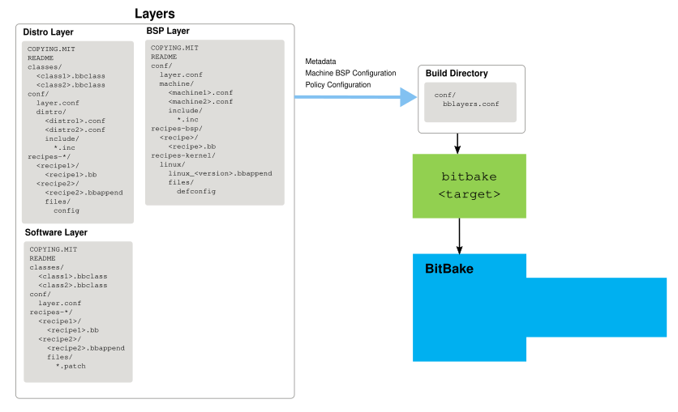
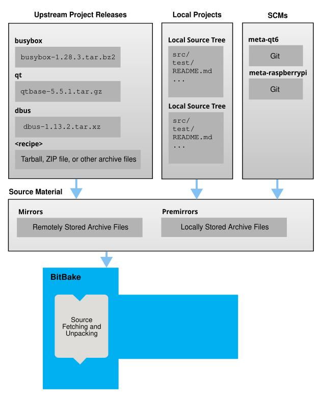
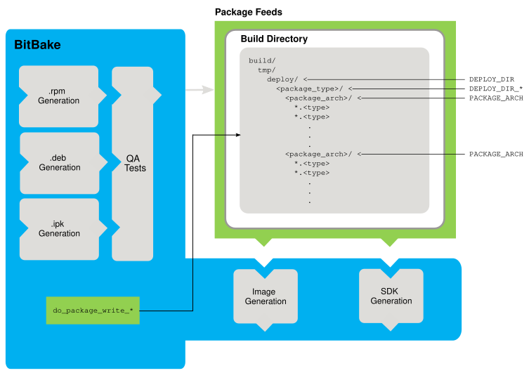
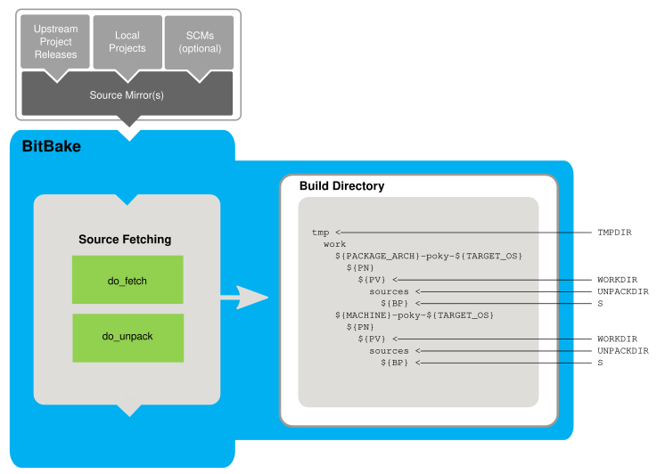
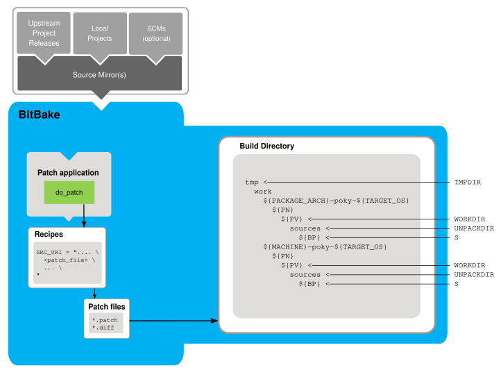
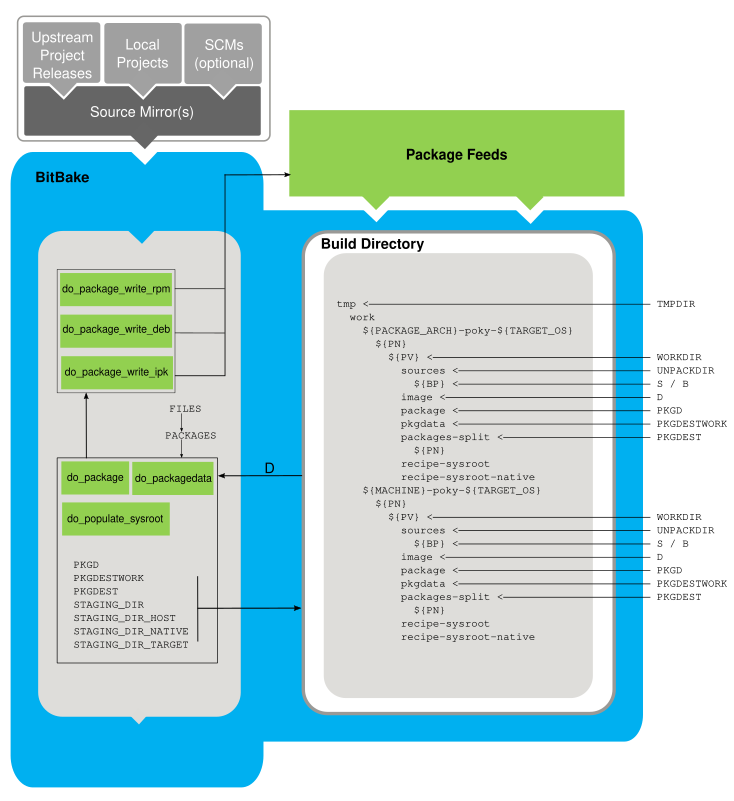
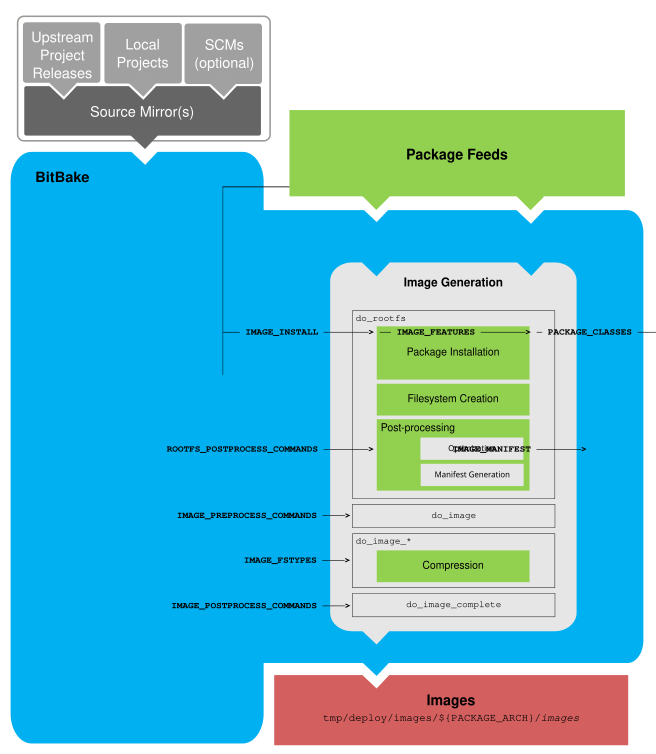

3 Concetti di Yocto Project
Questo capitolo fornisce spiegazioni sui concetti di Yocto Project che vanno oltre le semplici istruzioni pratiche e il materiale di riferimento. Vengono illustrati concetti come i componenti, il OpenEmbedded Build System workflow, le toolchain di "cross-development", la cache di stato condivisa [shared] e così via.
Nota
In questa sezione vengono introdotte numerose variabili e i relativi significati. Se, nel contesto di una directory di compilazione (Build Directory), si desidera esaminare il valore di una di queste variabili, è possibile utilizzare il comando bitbake-getvar, descritto nella sezione "Viewing Variable Values".
3.1 Componenti di Yocto Project
L'esecutore di attività [task], BitBake, insieme a vari tipi di file di configurazione, costituisce il OpenEmbedded-Core (OE-Core). Questa sezione offre una panoramica di questi componenti, descrivendone l'utilizzo e le interazioni.
BitBake gestisce l'analisi e l'esecuzione dei file di dati. I dati stessi sono di vario tipo:
Ricette: Forniscono dettagli su specifiche parti software.
Dati di Classe: Astraggono le informazioni di build comuni (ad esempio, come compilare un kernel Linux).
Dati di Configurazione: Definiscono le impostazioni specifiche della macchina, le decisioni relative alle policy e così via. I dati di configurazione fungono da collante per unire tutti gli elementi.
BitBake sa come combinare più fonti di dati e si riferisce a ciascuna fonte di dati come a un livello (layer). Per informazioni sui layer, consultare la sezione "Comprendere e Creare i Layer" del Manuale di Sviluppo dei Task di Yocto Project.
Ecco alcuni brevi dettagli su questi componenti principali. Per ulteriori informazioni su come questi componenti interagiscono durante una compilazione, consultare la sezione "Concetti del Sistema di Build OpenEmbedded".
3.1.1 BitBake
BitBake è lo strumento centrale di OpenEmbedded Build System e si occupa di analizzare i Metadata, generare un elenco di attività [task] e quindi eseguirle.
Questa sezione introduce brevemente BitBake. Per ulteriori informazioni su BitBake, consultare il Manuale Utente di BitBake.
Per visualizzare un elenco delle opzioni supportate da BitBake, utilizzare uno dei seguenti comandi:
$ bitbake -h
$ bitbake --help
L'utilizzo più comune di BitBake è bitbake recipename, dove recipename è il nome della ricetta che si desidera compilare (indicato come "target"). Il target spesso corrisponde alla prima parte del nome del file di una ricetta (ad esempio, "foo" per un file di ricetta denominato foo_1.3.0.bb). Quindi, per elaborare il file di ricetta matchbox-desktop_1.2.3.bb, si digita quanto segue:
$ bitbake matchbox-desktop
Potrebbero esistere diverse versioni di matchbox-desktop. BitBake sceglie quella selezionata dalla configurazione della distribuzione. Maggiori dettagli su come BitBake sceglie tra le diverse versioni e provider di destinazione nella sezione "Preferences" del Manuale Utente di BitBake.
BitBake tenta inoltre di eseguire prima tutti i task dipendenti. Ad esempio, prima di compilare matchbox-desktop, BitBake compilerebbe un cross-compilatore e glibc se non fossero già stati compilati.
Un'opzione utile di BitBake da considerare è -k o --continue. Questa opzione indica a BitBake di tentare di continuare l'elaborazione del job il più a lungo possibile anche dopo aver riscontrato un errore. Quando si verifica un errore, il target che ha fallito e quelli che dipendono da esso non possono essere ricreati. Tuttavia, quando si utilizza questa opzione, le altre dipendenze possono comunque essere elaborate.
3.1.2 Ricette
I file con estensione .bb sono "ricette". In generale, una ricetta contiene informazioni su un singolo software. Queste informazioni includono la posizione da cui scaricare il codice sorgente non modificato, eventuali patch da applicare al codice sorgente (se necessario), le opzioni di configurazione speciali da applicare, le modalità di compilazione dei file sorgente e le modalità di creazione del pacchetto dell'output compilato.
Il termine "package" [pacchetto] viene talvolta utilizzato per riferirsi alle ricette. Tuttavia, poiché il termine "package" viene utilizzato per indicare l'output impacchettato dal sistema di build OpenEmbedded (ovvero i file .ipk, .deb o .rpm), in questo documento si evita di utilizzare il termine "package" quando ci si riferisce alle ricette.
3.1.3 Classi
I file di classe (.bbclass) contengono informazioni utili da condividere tra i file di ricetta. Un esempio è la classe autotools*, che contiene impostazioni comuni per qualsiasi applicazione compilata con GNU Autotools. Il capitolo "Classi" nel Manuale di Riferimento di Yocto Project.
3.1.4 Configurazioni
I file di configurazione (.conf) definiscono diverse variabili di configurazione che regolano il processo di build di OpenEmbedded. Questi file rientrano in diverse aree che definiscono opzioni di configurazione della macchina, opzioni di configurazione della distribuzione, opzioni di ottimizzazione del compilatore, opzioni di configurazione comuni generali e opzioni di configurazione utente in build/conf/local.conf, che si trova nella Build Directory.
3.2 Layer
I layer sono repository che contengono metadati correlati (ovvero insiemi di istruzioni) che indicano al sistema di build OpenEmbedded come compilare un target. Il Modello a Layer di Yocto Project facilita la collaborazione, la condivisione, la personalizzazione e il riutilizzo all'interno dell'ambiente di sviluppo di Yocto Project. I layer separano logicamente le informazioni per il progetto. Ad esempio, si può utilizzare un layer per contenere tutte le configurazioni per un particolare componente hardware. Isolare le configurazioni specifiche dell'hardware consente di condividere altri metadati utilizzando un layer diverso laddove tali metadati potrebbero essere comuni a più componenti hardware.
Nell'ambiente di sviluppo di Yocto Project sono presenti numerosi layer. Lo Yocto Project Compatible Layer Index e OpenEmbedded Layer Index contengono entrambi layer utilizzabili o sfruttabili.
Per convenzione, i layer in Yocto Project seguono una struttura specifica. Conformarsi a una struttura nota consente a BitBake di fare delle ipotesi durante la compilazione su dove trovare i diversi tipi di metadati. È possibile trovare procedure e informazioni sugli strumenti (ad esempio bitbake-layers) per la creazione di layer adatti a Yocto Project nella sezione "Comprendere e Creare i Layer" del Manuale di Sviluppo dei Task di Yocto Project.
3.3 Concetti del Sistema di Build OpenEmbedded
Questa sezione analizza in dettaglio il processo di build utilizzato dall'OpenEmbedded Build System, specifico di Yocto Project. Il cuore del sistema di build è BitBake, l'esecutore delle task.
Il diagramma seguente rappresenta il flusso di lavoro di alto livello di una build. Il resto di questa sezione approfondisce i blocchi logici fondamentali di input, output, processo e metadati che costituiscono il flusso di lavoro [workflow].

In generale, il flusso di lavoro di una build è composto da diverse aree funzionali:
Configurazione Utente: Metadati utilizzabili per controllare il processo di build.
Layer di metadati: Vari layer che forniscono metadati relativi a software, macchine e distribuzioni.
File Sorgente: Release upstream, progetti locali e sistemi di controllo versione (SCM).
Sistema di Build: Processi controllati da BitBake. Questo blocco illustra in dettaglio come BitBake recupera il codice sorgente, applica le patch, completa la compilazione, analizza l'output per la generazione dei pacchetti, crea e testa i pacchetti, genera le immagini e crea gli strumenti di sviluppo incrociato [cross].
Flussi di Pacchetti: Directory contenenti i pacchetti di output (RPM, DEB o IPK), che vengono successivamente utilizzati per la creazione di un'immagine o di un Software Development Kit (SDK) prodotti dal sistema di build. Questi flussi possono anche essere copiati e condivisi tramite un server web o altri mezzi per facilitare l'estensione o l'aggiornamento delle immagini esistenti sui dispositivi in fase di esecuzione, se la gestione dei pacchetti in fase di esecuzione è abilitata.
Immagini: Immagini prodotte dal flusso di lavoro.
SDK per lo Sviluppo di Applicazioni: Strumenti di cross-sviluppo prodotti insieme a un'immagine o separatamente con BitBake.
3.3.1 Configurazione Utente
La configurazione utente aiuta a definire la build. Tramite la configurazione utente, è possibile indicare a BitBake l'architettura di destinazione [target] per la quale si sta creando l'immagine, la posizione in cui archiviare il codice sorgente scaricato e altre proprietà della build.
La figura seguente mostra una rappresentazione ingrandita della casella "User Configuration" della della figura del flusso di lavoro generale:

BitBake necessita di alcuni file di configurazione di base per completare una build. Questi file sono file *.conf. Quelli minimi necessari si trovano come file di esempio nella sottocartella conf della Build Directory.
Quando si inizializza l'ambiente di build, è possibile specificare quale directory sarà la Source Directory.
La configurazione dell'ambiente di compilazione crea una Build Directory se non esiste già. BitBake utilizza questa Build Directory per tutte le sue operazioni durante la compilazione. La Build Directory contiene una sottodirectory``conf`` che include le versioni di default dei file di configurazione build/conf/local.conf e build/conf/bblayers.conf configuration files. Questi file di configurazione di default vengono creati solo se non sono già presenti nella Build Directory al momento dell'esecuzione dello script di configurazione dell'ambiente di compilazione.
I File di configurazione forniscono numerose variabili di base che definiscono un ambiente di build. Per visualizzare un elenco delle possibili variabili per configurare tramite i file di configurazione, consultare il file local.conf.sample in OpenEmbedded-Core (OE-Core):
Ecco un elenco non esaustivo:
Selezione della Macchina Target: Controllata dalla variabile MACHINE.
Directory di Download: Controllata dalla variabile DL_DIR.
Directory Shared State: Controllata dalla variabile SSTATE_DIR.
Directory dei Dati Persistenti: Controllata dalla variabile PERSISTENT_DIR.
Output della Build: Controllata dalla variabile TMPDIR.
Policy di Distribuzione: Controllata dalla variabile DISTRO.
Formato del Packaging: Controllato dalla variabile PACKAGE_CLASSES.
Architettura Target dell'SDK: Controllata dalla variabile SDKMACHINE.
Pacchetti Extra dell'Immagine: Controllati dalla variabile EXTRA_IMAGE_FEATURES.
Nota
Le configurazioni impostate nel file build/conf/local.conf possono essere impostate anche nei file di configurazione build/conf/site.conf e build/conf/auto.conf.
Il file build/conf/bblayers.conf indica a BitBake quali layer considerare durante la compilazione. Per default, i layer elencati in questo file includono quelli minimi necessari al sistema di compilazione. Tuttavia, è necessario aggiungere manualmente eventuali layer personalizzati creati. Ulteriori informazioni sull'utilizzo del file build/conf/bblayers.conf sono disponibili nella sezione "Enabling Your Layer" nel Manuale di Sviluppo dei Task di Yocto Project.
I file site.conf e build/conf/auto.conf non vengono creati dallo script di inizializzazione dell'ambiente. Se si desidera il file build/conf/auto.conf, lo si deve creare manualmente. Il file build/conf/auto.conf viene in genere creato da un autobuilder:
site.conf: Si può utilizzare il file di configurazione build/conf/site.conf per configurare più directory di build. Ad esempio, supponiamo di avere diversi ambienti di build che condividono alcune caratteristiche comuni. Si possono impostare queste proprietà di build predefinite qui. Un buon esempio potrebbe essere il formato di packaging da utilizzare tramite la variabile PACKAGE_CLASSES.
auto.conf: Il file viene solitamente creato e modificato da un autobuilder. Le impostazioni inserite nel file sono in genere le stesse che si troverebbero nei file build/conf/local.conf o build/conf/site.conf.
È possibile modificare tutti i file di configurazione per definire ulteriormente un ambiente di compilazione specifico. Questo processo è rappresentato dal riquadro "User Configuration Edits" nella figura.
Quando si avvia la build col comando bitbake target, BitBake elabora le configurazioni per definire l'ambiente di build. È importante capire che OpenEmbedded Build System legge i file di configurazione in un ordine specifico: site.conf, build/conf/auto.conf e build/conf/local.conf. Inoltre, il sistema di build applica le normali regole di assegnazione delle istruzioni come descritto nel capitolo "Syntax and Operators" del Manuale Utente di BitBake. Poiché i file vengono analizzati in un ordine specifico, le assegnazioni di variabili per la stessa variabile potrebbero essere influenzate. Ad esempio, se il file build/conf/auto.conf e il file local.conf assegnano valori diversi alla variabile1, poiché il sistema di compilazione analizza build/conf/local.conf dopo build/conf/auto.conf, alla variabile1 viene assegnato il valore presente nel file build/conf/local.conf.
3.3.2 Metadati, Configurazione della Macchina e Configurazione delle Policy
La sezione precedente ha descritto le configurazioni utente che definiscono il comportamento globale di BitBake. Questa sezione esamina più da vicino i layer utilizzati dal sistema di build per controllare ulteriormente il processo di build. Questi layer forniscono metadati per il software, la macchina e le policy.
In generale, esistono tre tipi di input per i layer. È possibile visualizzarli sotto la casella "User Configuration" nella figura del figura del flusso di lavoro generale:
Metadata (.bb + Patches): Layer software contenenti file di ricette, patch e file di append forniti dall'utente. Un buon esempio di layer software potrebbe essere il layer meta-qt5 layer dall' OpenEmbedded Layer Index. Questo layer è per la versione 5.0 del popolare framework di sviluppo di applicazioni multipiattaforma Qt per desktop, sistemi embedded e dispositivi mobili.
Configurazione BSP della Macchina: I layer del Board Support Package (BSP) (ovvero "BSP Layer" nella figura seguente) forniscono configurazioni specifiche per la macchina. Questo tipo di informazioni è specifico per una particolare architettura target . Un buon esempio di layer BSP dalla Distribuzione Embedded di Riferimento (Poky) è il layer meta-yocto-bsp.
Configurazione delle Policy: I layer di distribuzione (ovvero "Distro Layer" nella figura seguente) forniscono policy di alto livello o generali per le immagini o gli SDK che vengono compilati per una particolare distribuzione. Ad esempio, nella Poky Reference Distribution, il layer della distro è meta-poky. All'interno del layer distro è presente una directory
conf/distroche contiene i file di configurazione della distribuzione (ad esempio, poky.conf che contengono numerose configurazioni di policy per la distribuzione Poky.
La figura seguente mostra una rappresentazione estesa di questi tre layer, tratta dalla figura del flusso di lavoro generale:


In generale, tutti i layer hanno una struttura simile. Contengono tutti un file di licenza (ad esempio, COPYING.MIT) se il layer deve essere distribuito, un file README come buona prassi e soprattutto se il layer deve essere distribuito, una directory di configurazione e directory di ricette. È possibile trovare informazioni sulla struttura generale dei layer utilizzati con Yocto Project nella sezione "Creating Your Own Layer" nel Manuale di Sviluppo dei Task di Yocto Project. Per una discussione generale sui layer e sui numerosi layer da cui è possibile attingere, consultare le sezioni "Layer" e "Il Modello a Layer di Yocto Project" presenti in precedenza in questo manuale.
Esplorando i link precedenti, avrete scoperto alcune aree in cui sono presenti molti layer compatibili con Yocto Project. Anche i Source Repositories mostrano i layer categorizzati sotto "Yocto Metadata Layers".
Nota
Nei Repository del Codice Sorgente di Yocto Project sono presenti layer che non si trovano nell'indice dei layer di OpenEmbedded. Tali layer sono obsoleti o sperimentali.
BitBake utilizza il file build/conf/bblayers.conf, che fa parte della configurazione utente, per individuare i layer da utilizzare durante la compilazione.
3.3.2.1 Layer Distro
Un layer di distribuzione fornisce le configurazioni delle policy per la distribuzione. Le best practice suggeriscono di isolare questo tipo di configurazioni in un layer dedicato. Le impostazioni che si forniscono in conf/distro/distro.conf sovrascrivono le impostazioni simili che BitBake trova nel file build/conf/local.conf nella directory Build Directory.
Il seguente elenco fornisce alcune spiegazioni e riferimenti su ciò che si trova tipicamente in un layer di distribuzione (ricordare che meta-poky è un tale layer):
classes, classes-global, classes-recipe: I file di classe (
.bbclass) contengono funzionalità comuni che possono essere condivise tra le ricette nella distribuzione. Quando le ricette ereditano una classe, ne assumono le impostazioni e le funzioni. Per ulteriori informazioni sui file di classe, consultare il capitolo "Classi" del Manuale di Riferimenti di Yocto.conf: Questa area contiene i file di configurazione per il layer (
conf/layer.conf), la distribuzione (conf/distro/distro.conf) e tutti i file di inclusione a livello di distribuzione.recipes-*: Ricette e file di append che influenzano le funzionalità comuni a tutta la distribuzione. Quest'area potrebbe includere ricette e file di append per aggiungere configurazioni specifiche della distribuzione, script di inizializzazione, ricette di immagini personalizzate e così via. Esempi di directory
recipes-*sonorecipes-coreerecipes-extra. La gerarchia e il contenuto all'interno di una directoryrecipes-*possono variare. In genere, queste directory contengono file di ricette (*.bb), file di aggiunta alle ricette (*.bbappend), directory specifiche della distribuzione per i file di configurazione e così via.
3.3.2.2 Layer BSP
Un layer BSP fornisce configurazioni macchina destinate a hardware specifici. Tutto ciò che si trova in questo layer è specifico per la macchina per la quale si sta creando l'immagine o l'SDK. Per i layer BSP è definita una struttura o un formato comune. È possibile trovare maggiori informazioni su questa struttura nel manuale Manuale del Board Support Package (BSP) di Yocto Project.
Nota
Affinché un layer BSP sia considerato conforme allo Yocto Project, deve soddisfare alcuni requisiti strutturali.
La directory di configurazione di un layer BSP contiene i file di configurazione per la macchina (conf/machine/machine.conf) e, naturalmente, per il layer stesso (conf/layer.conf).
La parte restante del layer è dedicata a ricette specifiche per funzione: recipes-bsp, recipes-core, recipes-graphics, recipes-kernel e così via. Possono essere presenti metadati per più fattori di forma, sistemi di supporto grafico e altro ancora.
Nota
Sebbene la figura mostri diverse directory recipes-*, non tutte queste directory compaiono in tutti i livelli BSP.
3.3.2.3 Layer Software
Un layer software fornisce i metadati per i pacchetti software aggiuntivi utilizzati durante la compilazione. Questo layer non include i metadati specifici della distribuzione o della macchina, che si trovano nei rispettivi layer.
Questo layer contiene tutte le ricette, i file di append e le patch necessarie al progetto.
3.3.3 Sorgenti
Affinché il sistema di build OpenEmbedded possa creare un'immagine o qualsiasi target, deve essere in grado di accedere ai file sorgente. La figura del flusso di lavoro generale rappresenta i file sorgente utilizzando i riquadri "Upstream Project Releases", "Local Projects" E "SCMs (optional)". La figura rappresenta anche i mirror, che svolgono un ruolo nell'individuazione dei file sorgente, con il riquadro "Source Materials".
Il metodo con cui i file sorgente vengono organizzati dipende dal progetto. Ad esempio, per il software rilasciato, i progetti tendono a utilizzare tarball o altri file archiviati che catturano lo stato di una release, garantendone una rappresentazione statica. D'altra parte, per un progetto più dinamico o sperimentale, i file sorgente potrebbero essere conservati in un repository gestito da un Source Control Manager (SCM) [sistema di controllo versione] come Git. Scaricare il codice sorgente da un repository consente di controllare il punto di partenza (la revisione) da cui si desidera compilare il software. È anche possibile una combinazione dei due metodi.
BitBake utilizza la variabile SRC_URI per indicare la posizione dei file sorgente, indipendentemente dalla loro ubicazione. Ogni ricetta deve avere una variabile SRC_URI che punta al codice sorgente.
Un altro elemento che gioca un ruolo significativo nella provenienza dei file sorgente è indicato dalla variabile DL_DIR. Questa area è una cache che può contenere il codice sorgente scaricato in precedenza. È anche possibile istruire il sistema di build OpenEmbedded a creare tarball dai repository Git, il che non è il comportamento di default, e a memorizzarli nella directory DL_DIR utilizzando la variabile BB_GENERATE_MIRROR_TARBALLS.
Un uso oculato della directory DL_DIR può evitare al sistema di build di dover effettuare una ricerca su Internet per trovare i file. Un buon metodo per utilizzare una directory di download è quello di impostare DL_DIR in modo che punti a un'area esterna alla directory Build Directory. In questo modo è possibile eliminare in sicurezza la directory Build Directory se necessario, senza il rischio di rimuovere i file sorgente scaricati.
Il resto di questa sezione fornisce un'analisi più approfondita dei file sorgente e dei mirror. Ecco una descrizione più dettagliata dell'area dei file sorgente nella figura del flusso di lavoro generale:


3.3.3.1 Versioni dei Progetti Upstream
Le versioni dei progetti upstream sono disponibili ovunque sotto forma di file compressi (ad esempio, file tarball o zip). Questi file corrispondono a singole ricette. Ad esempio, la figura utilizza versioni specifiche per BusyBox, Qt e Dbus. Un file di archivio può essere relativo a qualsiasi prodotto rilasciato che può essere compilato utilizzando una ricetta.
3.3.3.2 Progetti Locali
I progetti locali sono porzioni di software personalizzate fornite dall'utente. Queste porzioni risiedono in una posizione locale al progetto, ad esempio una directory in cui l'utente carica i file (come una directory locale contenente la struttura di directory del codice sorgente utilizzata dal gruppo).
Il metodo canonico per includere un progetto locale consiste nell'utilizzare la classe externalsrc. È possibile utilizzare il file build/conf/local.conf o il file append di una ricetta per sovrascrivere o impostare la ricetta in modo che punti alla directory locale da cui recuperare il codice sorgente.
3.3.3.3 Gestori di Controllo Versione (opzionale)
Un'altra fonte da cui il sistema di build può ottenere i file sorgente è tramite Fetchers, utilizzando diversi Source Control Managers (SCM) come Git o Subversion. In questi casi, un repository viene clonato o estratto. Il task do_fetch all'interno di BitBake utilizza la variabile SRC_URI e il prefisso dell'argomento per determinare il modulo fetcher corretto.
Nota
Per informazioni su come fare in modo che il sistema di build OpenEmbedded generi tarball per i repository Git e li posizioni nella directory DL_DIR, consultare la variabile BB_GENERATE_MIRROR_TARBALLS nel Manuale di Riferimento di Yocto Project.
Quando recupera un repository, BitBake utilizza la variabile SRCREV per determinare la revisione specifica da cui effettuare la compilazione.
3.3.3.4 Mirror del Codice Sorgente
Esistono due tipi di mirror: pre-mirror e mirror standard. Le variabili PREMIRRORS e MIRRORS puntano rispettivamente a questi due tipi. BitBake controlla i pre-mirror prima di cercare i file sorgente nel repository principale. I pre-mirror sono appropriati quando si dispone di una directory condivisa che non è definita dalla variabile DL_DIR. Un pre-mirror in genere punta a una directory condivisa locale all'organizzazione.
I mirror standard possono essere qualsiasi sito su Internet utilizzato come posizione alternativa per il codice sorgente nel caso in cui il sito principale non sia funzionante per un motivo o per l'altro.
3.3.4 Feed dei Pacchetti
Quando il sistema di build OpenEmbedded genera un'immagine o un SDK, preleva i pacchetti da un'area di feed [alimentazione] di pacchetti situata nella Build Directory. La figura del flusso di lavoro generale mostra quest'area di feed di pacchetti nell'angolo in alto a destra.
Questa sezione esamina più nel dettaglio l'area di feed di pacchetti utilizzata dal sistema di compilazione. Ecco una descrizione più approfondita dell'area:


I feed di pacchetti sono una fase intermedia del processo di build. Il sistema di build OpenEmbedded fornisce classi per generare diversi tipi di pacchetti e si specificano le classi da abilitare tramite la variabile PACKAGE_CLASSES. Prima di inserire i pacchetti nei feed, il processo di compilazione li convalida con i controlli di qualità dell'output generati tramite la classe insane.
L'area di feed di pacchetti si trova nella Build Directory. La directory utilizzata dal sistema di build per memorizzare temporaneamente i pacchetti è determinata da una combinazione di variabili e dal gestore di pacchetti in uso. Consultare il riquadro "Package Feeds" nell'illustrazione e le informazioni a destra di tale area. In particolare, quanto segue definisce la posizione in cui vengono conservati i file dei pacchetti:
DEPLOY_DIR: Definita come
tmp/deploynella Build Directory.DEPLOY_DIR_*: A seconda del gestore di pacchetti utilizzato, la sottocartella del tipo di pacchetto. In caso di creazione di pacchetti RPM, IPK o DEB e di archivi tarball, vengono utilizzate rispettivamente le variabili DEPLOY_DIR_RPM, DEPLOY_DIR_IPK o DEPLOY_DIR_DEB.PACKAGE_ARCH: Definisce le sottocartelle specifiche dell'architettura. Ad esempio, potrebbero essere disponibili pacchetti per le architetture i586 o qemux86.
BitBake utilizza i task do_package_write_* per generare pacchetti e posizionarli nell'area di gestione dei pacchetti (ad esempio, do_package_write_ipk per i pacchetti IPK). Per ulteriori informazioni, consultare le sezioni "do_package_write_deb", "do_package_write_ipk" e "do_package_write_rpm" nel Manuale di Riferimento di Yocto Project. Ad esempio, si consideri uno scenario in cui viene utilizzato un gestore di pacchetti IPK e sono disponibili architetture di pacchetti sia per i586 che per qemux86. I pacchetti per l'architettura i586 vengono posizionati in build/tmp/deploy/ipk/i586, mentre i pacchetti per l'architettura qemux86 vengono posizionati in build/tmp/deploy/ipk/qemux86.
3.3.5 Il Tool BitBake
Il sistema di build di OpenEmbedded utilizza BitBake per produrre immagini e Software Development Kit (SDK). Come si può vedere nella figura del flusso di lavoro generale, l'area BitBake è composta da diverse aree funzionali. Questa sezione esamina più nel dettaglio ciascuna di queste aree.
Nota
La documentazione per il tool BitBake è disponibile separatamente. Consultare il Manuale Utente di BitBake per materiale di riferimento su BitBake.
3.3.5.1 Prelievo del Codice Sorgente
Le prime fasi della creazione di una ricetta consistono nel recuperare [fetch] e spacchettare il codice sorgente:


I task do_fetch e do_unpack recuperano i file sorgente e li decomprimono nella Build Directory.
Nota
Per ogni file locale (ad esempio file://) che fa parte dell'istruzione SRC_URI di una ricetta, il sistema di build OpenEmbedded calcola il checksum del file per la ricetta e lo inserisce nella firma [signature] del task do_fetch. Se un file locale è stato modificato, il task do_fetch e tutti quelli che dipendono da esso vengono rieseguiti.
Per default, tutto viene eseguito nella Build Directory, che ha una struttura definita. Per ulteriori informazioni generali sulla Build Directory, consultare la sezione "build/" nel Manuale di Riferimento di Yocto Project.
Ogni ricetta ha un'area nella Build Directory in cui risiede il codice sorgente decompresso. La variabile UNPACKDIR punta a questa area per il codice sorgente decompresso di una ricetta e ha come nome di default sources. La figura precedente e l'elenco seguente descrivono la gerarchia della Build Directory:
TMPDIR: La directory base in cui il sistema di build OpenEmbedded esegue tutte le sue operazioni durante la compilazione. La directory base di default è
tmp.PACKAGE_ARCH: L'architettura del pacchetto o dei pacchetti compilati. A seconda della destinazione finale del pacchetto o dei pacchetti (ad esempio, architettura della macchina, Build Host, SDK o macchina specifica), PACKAGE_ARCH varia. Per ulteriori dettagli, consultare la descrizione della variabile.
TARGET_OS: Il sistema operativo del dispositivo target. Un valore tipico è "linux" (ad esempio. "qemux86-poky-linux").
PN: Il nome della ricetta utilizzata per creare il pacchetto. Questa variabile può avere diversi significati. Tuttavia, quando utilizzata nel contesto dei file di input, PN rappresenta il nome della ricetta.
WORKDIR: La directory in cui il sistema di build OpenEmbedded crea una ricetta (ovvero, esegue le operazioni necessarie per creare il pacchetto).
PV: La versione della ricetta utilizzata per creare il pacchetto.
UNPACKDIR: Contiene i file sorgente decompressi per una determinata ricetta.
S: Contiene la posizione finale del codice sorgente.
Il valore si default per BP è
${BPN}-${PV}dove:
Nota
Nella figura precedente, si noti che sono presenti due gerarchie di esempio: una basata sull'architettura del pacchetto (ovvero PACKAGE_ARCH) e una basata sulla macchina (ovvero MACHINE). Le strutture sottostanti sono identiche. La differenza risiede nell'elemento utilizzato dal sistema di build OpenEmbedded come target di compilazione (ad esempio, architettura generale, host di compilazione, SDK o una macchina specifica).
3.3.5.2 Applicazione delle Patch
Una volta scaricato ed estratto il codice sorgente, BitBake individua i file di patch e li applica ai file sorgente:


Il task do_patch utilizza le istruzioni SRC_URI di una ricetta e la variabile FILESPATH per individuare i file di patch applicabili.
L'elaborazione di default dei file di patch presuppone che i file abbiano estensione *.patch o *.diff (o una versione compressa di tali estensioni). È possibile utilizzare i parametri SRC_URI per modificare il modo in cui il sistema di build riconosce i file di patch. Per ulteriori informazioni, consultare il task do_patch.
BitBake individua e applica più patch per una singola ricetta nell'ordine in cui le individua. La variabile FILESPATH definisce l'insieme predefinito di directory che il sistema di build utilizza per cercare i file di patch. Una volta individuate, le patch vengono applicate ai file sorgente della ricetta, che si trovano nella directory S.
Per ulteriori informazioni su come vengono create le directory dei sorgenti, consultare la sezione "Prelievo del Codice Sorgente". Per ulteriori informazioni su come creare le patch e su come il sistema di compilazione le elabora, consultare la sezione "Patching Code" nel Manuale di Sviluppo dei Task di Yocto Project. È inoltre possibile consultare la sezione "Use devtool modify to Modify the Source of an Existing Component" nel Manuale di Sviluppo di Applicazioni Yocto Project e Software Development Kit (SDK) e la sezione "Using Traditional Kernel Development to Patch the Kernel" nel Manuale di Sviluppo del Kernel Linux di Yocto Project.
3.3.5.3 Configurazione, Compilazione e Staging
Dopo l'applicazione delle patch al codice sorgente, BitBake esegue dei task di configurazione e compilazione. Una volta completata la compilazione, i file vengono copiati in un'area temporanea (staging) in preparazione per il packaging:

Questa fase del processo di build comprende le seguenti attività [task]:
do_prepare_recipe_sysroot: Questo task configura le due directory di sistema (sysroot) nella directory
${WORKDIR}(ovverorecipe-sysrooterecipe-sysroot-native) in modo che i task successivi della ricetta (in particolare do_configure and do_compile) possano accedere alle librerie, ai file header e ad altri file simili creati dalle ricette da cui dipende.recipe-sysroot: contiene le librerie target, i relativi file header e altri dati necessari per la cross-compilazione del software a partire dai suoi sorgentirecipe-sysroot-native: contiene eseguibili nativi dell'host con le relative librerie e altri dati, in modo che possano essere eseguiti direttamente sull'host di build quando richiesto dal processo di compilazione.
do_configure: Questo task configura il codice sorgente abilitando e disabilitando le opzioni di configurazione e di fase di compilazione per il software in fase di build. Le configurazioni possono provenire dalla ricetta stessa, così come da una classe ereditata. Inoltre, il software stesso potrebbe configurarsi a seconda del target per cui viene compilato.
Le configurazioni gestite dal task do_configure sono specifiche per le configurazioni del codice sorgente compilato dalla ricetta.
Se si utilizza la classe autotools*, è possibile aggiungere ulteriori opzioni di configurazione tramite le variabili EXTRA_OECONF o PACKAGECONFIG_CONFARGS. Per informazioni sul funzionamento di queste variabili all'interno della classe, consultare la documentazione della classe autotools* qui.
do_compile: Una volta completato un task di configurazione, BitBake compila il codice sorgente utilizzando il task do_compile. La compilazione avviene nella directory indicata dalla variabile B. Si noti che la directory B è, per default, la stessa della directory S.
do_install: Al termine della compilazione, BitBake esegue il task do_install. Questo task copia i file dalla directory B e li posiziona in un'area temporanea indicata dalla variabile D. La creazione del pacchetto avviene successivamente utilizzando i file presenti in questa directory di appoggio.
3.3.5.4 Suddivisione in Pacchetti
Dopo che il codice sorgente è stato configurato, compilato e predisposto, il sistema di build analizza i risultati e suddivide l'output in pacchetti:


I task do_package e do_packagedata vengono utilizzati per analizzare i file presenti nella directory D e suddividerli in sottoinsiemi in base ai pacchetti e ai file disponibili. L'analisi include, tra le altre cose, l'estrazione dei simboli di debug, l'esame delle dipendenze delle librerie condivise tra i pacchetti e l'analisi delle relazioni tra i pacchetti.
Il task do_packagedata crea i metadati dei pacchetti in base all'analisi, in modo che il sistema di build possa generare i pacchetti finali. Il task do_populate_sysroot predispone (copia) un sottoinsieme dei file installati dal task do_install nella directory sysroot appropriata. I risultati di lavoro, di fase e intermedi del processo di analisi e suddivisione dei pacchetti utilizzano diverse aree:
PKGD: La directory di destinazione (ovvero
package) per i pacchetti prima che vengano suddivisi in singoli pacchetti.PKGDESTWORK: Un'area di lavoro temporanea (ovvero
pkgdata) utilizzata dal task do_package per salvare i metadati dei pacchetti.PKGDEST: La directory genitore (ovvero
packages-split) per i pacchetti dopo che sono stati suddivisi.PKGDATA_DIR: Una directory condivisa [shared] a livello globale che contiene i metadati di packaging generati durante il processo di packaging. Tale processo copia i metadati da PKGDESTWORK all'area PKGDATA_DIR dove diventano disponibili a livello globale.
STAGING_DIR_HOST: Il path della directory di sistema (sysroot) del sistema su cui viene compilato un componente per l'esecuzione (ad esempio,
recipe-sysroot).STAGING_DIR_NATIVE: Il path della directory di sistema utilizzata per la compilazione dei componenti per l'host di compilazione (ad esempio,
recipe-sysroot-native).STAGING_DIR_TARGET: Il path della directory di sistema utilizzata quando un componente, compilato per l'esecuzione su un sistema, genera codice per un'altra macchina (ad esempio, le ricette cross-canadian).
I pacchetti per una ricetta sono elencati nella variabile PACKAGES. Il file di configurazione bitbake.conf definisce il seguente elenco predefinito di pacchetti:
PACKAGES = "${PN}-src ${PN}-dbg ${PN}-staticdev ${PN}-dev ${PN}-doc ${PN}-locale ${PACKAGE_BEFORE_PN} ${PN}"
Ciascuno di questi pacchetti contiene un elenco di default di file definiti con la variabile FILES. Ad esempio, il pacchetto ${PN}-dev rappresenta i file utili allo sviluppo di applicazioni che dipendono da ${PN}. L'elenco di default di file per ${PN}-dev, definito anche in bitbake.conf, è definito come segue:
FILES:${PN}-dev = "${includedir} ${FILES_SOLIBSDEV} ${libdir}/*.la \
${libdir}/*.o ${libdir}/pkgconfig ${datadir}/pkgconfig \
${datadir}/aclocal ${base_libdir}/*.o \
${libdir}/${BPN}/*.la ${base_libdir}/*.la \
${libdir}/cmake ${datadir}/cmake"
I path in questo elenco devono essere percorsi assoluti dal punto di vista del filesystem root sul target e non devono fare riferimento alla variabile D o a qualsiasi variabile correlata a WORKDIR. Un esempio corretto sarebbe:
${sysconfdir}/foo.conf
Nota
L'elenco dei file per un pacchetto viene definito utilizzando la sintassi di override, separando i FILES e il nome del pacchetto con due punti (:).
Un dato file può appartenere a un solo pacchetto. Iterando dal pacchetto più a sinistra a quello più a destra in PACKAGES, ogni file che corrisponde a uno dei modelli definiti nella corrispondente definizione di FILES viene incluso nel pacchetto.
Nota
Per scoprire quale pacchetto installa un file, è possibile utilizzare l'utilità da riga di comando oe-pkgdata-util:
$ oe-pkgdata-util find-path '/etc/fstab'
base-files: /etc/fstab
Per ulteriori informazioni sull'utilità oe-pkgdata-util, consultare la sezione Viewing Package Information with oe-pkgdata-util del Manuale di Sviluppo dei Task di Yocto Project.
Per aggiungere una variante di pacchetto personalizzata della ricetta ${PN} denominata ${PN}-extra (il nome è arbitrario), è possibile aggiungerla alla variabile PACKAGE_BEFORE_PN:
PACKAGE_BEFORE_PN += "${PN}-extra"
In alternativa, un pacchetto personalizzato può essere aggiunto inserendolo nella variabile PACKAGES utilizzando l'operatore di prefisso (=+):
PACKAGES =+ "${PN}-extra"
A seconda del tipo di pacchetti creati (RPM, DEB o IPK),, il task do_package_write_* crea i pacchetti effettivi e li posiziona nell'area del Package Feed, ovvero ${TMPDIR}/deploy. Per maggiori dettagli su questa parte del processo di build, consultare la sezione "Feed dei Pacchetti".
Nota
Non è previsto il supporto per la creazione di feed direttamente dalle directory deploy/*. La creazione di tali feed richiede solitamente un meccanismo di gestione che carichi i nuovi pacchetti in un feed ufficiale (ad esempio, la distribuzione Ångström). Questa funzionalità è fortemente specifica per la distribuzione e pertanto non è disponibile di default.
3.3.5.5 Generazione dell'Immagine
Una volta che i pacchetti sono stati suddivisi e archiviati nell'area Package Feeds, il sistema di build utilizza BitBake per generare l'immagine del filesystem root:


Il processo di generazione dell'immagine si compone di diverse fasi e dipende da diversi task e variabili. Il task do_rootfs crea il filesystem root (struttura di file e directory) per un'immagine. Questo task utilizza diverse variabili chiave per creare l'elenco dei pacchetti da installare:
IMAGE_INSTALL: Elenca il set base di pacchetti da installare dall'area Package Feeds.
PACKAGE_EXCLUDE: Specifica i pacchetti che non devono essere installati nell'immagine.
IMAGE_FEATURES: Specifica le funzionalità da includere nell'immagine. La maggior parte di queste funzionalità corrisponde a pacchetti aggiuntivi da installare.
PACKAGE_CLASSES: Specifica il backend dei pacchetti (ad esempio RPM, DEB o IPK) da utilizzare e, di conseguenza, aiuta a determinare dove trovare i pacchetti nell'area Package Feeds.
IMAGE_LINGUAS: Determina la/le lingua/e per cui vengono installati i pacchetti di supporto linguistico aggiuntivi.
PACKAGE_INSTALL: L'elenco finale dei pacchetti passati al gestore di pacchetti per l'installazione nell'immagine.
Con IMAGE_ROOTFS che punta alla posizione del filesystem in fase di creazione e la variabile PACKAGE_INSTALL che fornisce l'elenco finale dei pacchetti da installare, viene creato il filesystem root.
L''installazione dei pacchetti è gestita dal "package manager" (ad esempio dnf/rpm, opkg o apt/dpkg) indipendentemente dal fatto che la gestione dei pacchetti sia abilitata o meno per il sistema target. Al termine del processo, se la gestione dei pacchetti non è abilitata per il sistema target, i file di dati del gestore di pacchetti vengono eliminati dal filesystem root. Come parte della fase finale dell'installazione dei pacchetti, vengono eseguiti gli script di post-installazione inclusi nei pacchetti stessi. Gli script che non vengono eseguiti correttamente sull'host di build vengono eseguiti sul sistema target al primo avvio. Se si utilizza un filesystem root di sola lettura (vedere filesystem a sola lettura, tutti gli script di post-installazione devono essere eseguiti correttamente sull'host di build durante la fase di installazione dei pacchetti, poiché il filesystem root sul sistema di destinazione è di sola lettura.
Le fasi finali del task do_rootfs gestiscono il "post processing". Il post processing include la creazione di un file manifest e le ottimizzazioni.
Il file manifest (.manifest) si trova nella stessa directory dell'immagine del filesystem root. Questo file elenca, riga per riga, i pacchetti installati. Il file manifest è utile, ad esempio, per la classe testimage, per determinare se eseguire o meno test specifici. Consultare la variabile IMAGE_MANIFEST per ulteriori informazioni.
I processi di ottimizzazione eseguiti sull'immagine includono mklibs e qualsiasi altro comando di post-elaborazione definito dalla variabile ROOTFS_POSTPROCESS_COMMAND. Il processo mklibs ottimizza le dimensioni delle librerie.
Dopo la creazione del filesystem root, l'elaborazione dell'immagine inizia tramite il task do_image. Il sistema di compilazione esegue tutti i comandi di pre-elaborazione definiti dalla variabile IMAGE_PREPROCESS_COMMAND. Questa variabile specifica un elenco di funzioni da chiamare prima che il sistema di compilazione crei i file di output finali dell'immagine.
Il sistema di build crea dinamicamente task do_image_* secondo necessità, in base ai tipi di immagine specificati nella variabile IMAGE_FSTYPES. Il processo trasforma tutto in un file immagine o in un insieme di file immagine e può comprimere l'immagine del filesystem di root per ridurne le dimensioni complessive. I formati utilizzati per il filesystem di root dipendono dalla variabile IMAGE_FSTYPES. La compressione dipende dal fatto che i formati supportino o meno la compressione.
Ad esempio, un task creato dinamicamente durante la creazione di un particolare tipo di immagine avrebbe la seguente forma:
do_image_type
Quindi, se il tipo specificato da IMAGE_FSTYPES fosse ext4, il task generata dinamicamente sarebbe il seguente:
do_image_ext4
Il task coinvolto nella creazione dell'immagine è do_image_complete. Questo task completa l'immagine applicando qualsiasi post-elaborazione definita tramite la variabile IMAGE_POSTPROCESS_COMMAND. La variabile specifica un elenco di funzioni da chiamare una volta che il sistema di build ha creato i file di output dell'immagine finale.
Nota
L'intero processo di generazione dell'immagine viene eseguito in ambiente Pseudo. L'esecuzione in ambiente Pseudo garantisce che i file nel filesystem root abbiano i permessi corretti.
3.3.5.6 Generazione dell'SDK
Il sistema di build OpenEmbedded utilizza BitBake per generare gli script di installazione del Software Development Kit (SDK) sia per l'SDK standard che per l'SDK estensibile (eSDK):

Nota
Per ulteriori informazioni sulla generazione della toolchain di cross-sviluppo, consultare la sezione "Generazione di Toolchain di Cross-Sviluppo". Per informazioni sui vantaggi derivanti dalla creazione di una toolchain di cross-sviluppo tramite il task do_populate_sdk, consultare la sezione "Building an SDK Installer" in the nel Manuale di Sviluppo di Applicazioni Yocto Project e Software Development Kit (eSDK).
Come per la generazione delle immagini, il processo di creazione degli script SDK si compone di diverse fasi e dipende da numerose variabili. I task do_populate_sdk e do_populate_sdk_ext utilizzano queste variabili chiave per creare l'elenco dei pacchetti da installare. Per informazioni sulle variabili elencate nella figura, consultare la sezione "SDK per lo Sviluppo di Applicazioni".
I task do_populate_sdk contribuisce alla creazione dell'SDK standard e gestisce due parti: una parte target e una parte host. La parte target è quella compilata per l'hardware target e include librerie e file header. La parte host è la parte dell'SDK che viene eseguita su SDKMACHINE.
Il task do_populate_sdk_ext contribuisce alla creazione dell'SDK estensibile e gestisce le parti host e target in modo diverso rispetto alla sua controparte per l'SDK standard. Per l'SDK estensibile, ik task incapsula il sistema di compilazione, che include tutto il necessario (host e target) per l'SDK.
Indipendentemente dal tipo di SDK in fase di creazione, i task eseguono alcune operazioni di pulizia, dopodiché vengono creati uno script di configurazione dell'ambiente di cross-sviluppo e tutti i file di configurazione necessari. L'output finale è lo script di installazione della toolchain di cross-sviluppo (file .sh), che include lo script di configurazione dell'ambiente [environment].
3.3.5.7 File Stamp e Riesecuzione dei Task
Per ogni task completata con successo, BitBake scrive un file di "stamp" (timbro) nella directory STAMPS_DIR. L'inizio del nome del file di timbro è determinato dalla variabile STAMP, mentre la fine del nome è composta dal nome del task e dal checksum di input corrente.
Nota
Questo schema di denominazione presuppone che BB_SIGNATURE_HANDLER è "OEBasicHash", il che è quasi sempre vero nelle versioni attuali di OpenEmbedded.
Per determinare se un task deve essere rieseguita, BitBake verifica se esiste un file di stamp con un checksum di input corrispondente per il task. In tal caso, si presume che l'output del task esista e sia ancora valido. Altrimenti, il task viene rieseguito.
Nota
Il meccanismo degli stamp [timbratura] è più generale del meccanismo di cache dello shared state (sstate) descritto nella sezione "I Task Setscene e Shared State". BitBake evita di rieseguire qualsiasi task che disponga di un file di timbratura valido, non solo i task che possono essere accelerati tramite la cache sstate.
Tuttavia, è importante notare che i file di stamp servono solo come indicatore dell'avvenuta esecuzione di un task e non registrano l'output del task stess. L'output effettivo del task si trova solitamente in TMPDIR (ad esempio, nella WORKDIR di alcune ricette). Il meccanismo di cache sstate aggiunge un modo per memorizzare nella cache l'output dei task, che può quindi essere condiviso tra le macchine di compilazione.
Poiché STAMPS_DIR è solitamente una sottocartella di TMPDIR, la rimozione di TMPDIR comporterà anche la rimozione di STAMPS_DIR, il che significa che i task verranno rieseguiti correttamente per ripopolare TMPDIR.
Se si desidera che un task venga sempre considerata "obsoleta", è possibile contrassegnarla con il "varflag" [flag di variabile] nostamp. Se un altro task dipende da tale task, anche quest'ultimo verrà sempre considerato obsoleta, il che potrebbe non essere l'effetto desiderato.
Per informazioni dettagliate su come visualizzare le informazioni sulla firma di un task, consultare la sezione "Viewing Task Variable Dependencies" Yocto Project Development Tasks Manual.
3.3.6 Immagini
Le immagini prodotte dal sistema di build sono versioni compresse del filesystem root e sono pronte per l'avvio su un dispositivo target. Come si può vedere nella figura del flusso di lavoro generale, l'output di BitBake è costituito, in parte, da immagini. Questa sezione esamina più da vicino questo output:

Nota
Per un elenco di immagini di esempio fornite da Yocto Project, consultare il capitolo "Immagini" nel Manuale di Riferimento di Yocto Project.
Il processo di build scrive le immagini nella Build Directory all'interno della cartella tmp/deploy/images/machine/, come mostrato in figura. Questa cartella contiene tutti i file che si prevede vengano caricati sul dispositivo di destinazione. La variabile DEPLOY_DIR punta alla directory deploy, mentre la variabile DEPLOY_DIR_IMAGE punta alla directory appropriata contenente le immagini per la configurazione corrente.
kernel-image: Un file binario del kernel. La variabile KERNEL_IMAGETYPE determina lo schema di denominazione per il file immagine del kernel. A seconda di questa variabile, il file può iniziare con diverse stringhe di denominazione. La directory
deploy/images/machine può contenere più file immagine per la macchina.root-filesystem-image: Filesystem root per il dispositivo target (ad esempio, file
*.ext3o*.bz2). La variabile IMAGE_FSTYPES determina il tipo di immagine del filesystem root. La directorydeploy/images/machine può contenere più filesystem root per la macchina.kernel-modules: Archivi tar [tarball] contenenti tutti i moduli compilati per il kernel. Gli archivi tar dei moduli del kernel esistono per scopi legacy e possono essere disabilitati impostando la variabile MODULE_TARBALL_DEPLOY a "0". La directory
deploy/images/machine può contenere più archivi tarball di moduli del kernel per la macchina.bootloaders: Se applicabile alla macchina target, bootloader che supportano l'immagine. La directory
deploy/images/machine può contenere più bootloader per la macchina.symlinks: La cartella
deploy/images/machine contiene un link simbolico che punta al file compilato più di recente per ciascuna macchina. Questi link possono essere utili per script esterni che necessitano di ottenere la versione più recente di ciascun file.
3.3.7 SDK per lo Sviluppo di Applicazioni
Nella figura del flusso di lavoro generale, l'output etichettato "Application Development SDK" rappresenta un SDK. Il processo di generazione dell'SDK varia a seconda che si stia creando un SDK estensibile (ad esempio, bitbake -c populate_sdk_ext imagename) o un SDK standard (ad esempio, bitbake -c populate_sdk imagename). Questa sezione esamina più da vicino questo output:

Nella sua forma specifica, questo output è un insieme di file che include un programma di installazione autoestraente dell'SDK (*.sh), file manifest per host e target e file utilizzati per il test dell'SDK. Quando si esegue il file di installazione dell'SDK, questo installa l'SDK. L'SDK è composto da una toolchain di sviluppo ctoss-sviluppo, un insieme di librerie e file di header e uno script di configurazione dell'ambiente SDK. L'esecuzione di questo programma di installazione configura essenzialmente l'ambiente di sviluppo cross-sviluppo. È possibile considerare la toolchain cross-development come la parte "host", poiché viene eseguita sulla macchina SDK. Le librerie e i file di header possono essere considerati come la parte "target", poiché sono compilati per l'hardware target. Lo script di configurazione dell'ambiente viene aggiunto per consentire l'inizializzazione dell'ambiente prima di utilizzare i tool.
Nota
Yocto Project supporta diversi metodi per configurare questo ambiente di sviluppo cross-development. Questi metodi includono il download di programmi di installazione SDK precompilati o la creazione e installazione di un programma di installazione SDK personalizzato.
Per informazioni di base sulle toolchain cross-development nell'ambiente di sviluppo di Yocto Project, consultare la sezione "Generazione di Toolchain di Cross-Sviluppo".
Per informazioni sulla configurazione di un ambiente di sviluppo cross-development, consultare il manuale Manuale di Sviluppo di Applicazioni Yocto Project e Software Development Kit (SDK/eSDK).
Tutti i file di output di un SDK vengono scritti nella cartella deploy/sdk all'interno della Build Directory, come mostrato nella figura precedente. A seconda del tipo di SDK, esistono diverse variabili per configurare questi file. Le variabili associate a un SDK estensibile sono:
DEPLOY_DIR: Indica la directory
deploy.SDK_EXT_TYPE: Controlla se gli artefatti dello "shared state" vengono copiati o meno nell'SDK estensibile. Per default, tutti gli artefatti dello "shared state" richiesti vengono copiati nell'SDK.
SDK_INCLUDE_PKGDATA: Specifica se i dati del pacchetto vengono inclusi o meno nell'SDK estensibile per tutte le ricette nel target "world".
SDK_INCLUDE_TOOLCHAIN: Specifica se la toolchain viene inclusa o meno durante la compilazione dell'SDK estensibile.
ESDK_LOCALCONF_ALLOW: Un elenco di variabili consentite dalla configurazione del sistema di buld alla configurazione dell'SDK estensibile.
ESDK_LOCALCONF_REMOVE: Elenco di variabili non consentite dalla configurazione del sistema di build alla configurazione dell'SDK estensibile.
ESDK_CLASS_INHERIT_DISABLE: Elenco di classi da rimuovere dal valore INHERIT a livello globale all'interno della configurazione dell'SDK estensibile.
Il seguente elenco mostra le variabili associate a un SDK standard:
DEPLOY_DIR: Indica la directory
deploy.SDKMACHINE: Specifica l'architettura della macchina su cui vengono eseguiti gli strumenti di cross-sviluppo per creare i pacchetti per l'hardware target.
SDKIMAGE_FEATURES: Elenca le funzionalità da includere nella parte "target" dell'SDK.
TOOLCHAIN_HOST_TASK: Elenca i pacchetti che costituiscono la parte host dell'SDK (ovvero la parte che viene eseguita su SDKMACHINE). Quando si utilizza
bitbake -c populate_sdk imagenameper creare l'SDK, viene applicato un set di pacchetti di default. Questa variabile consente di aggiungere ulteriori pacchetti.TOOLCHAIN_TARGET_TASK: Elenca i pacchetti che compongono la parte target dell'SDK (ovvero la parte compilata per l'hardware di destinazione).
SDKPATHINSTALL: Definisce il path di installazione di default dell'SDK offerto dallo script di installazione.
SDK_HOST_MANIFEST: Elenca tutti i pacchetti installati che compongono la parte host dell'SDK. Questa variabile svolge anche un ruolo secondario nello sviluppo di SDK estensibili. Tuttavia, viene utilizzata principalmente per l'SDK standard.
SDK_TARGET_MANIFEST: Elenca tutti i pacchetti installati che compongono la parte target dell'SDK. Anche questa variabile svolge un ruolo secondario nello sviluppo di SDK estensibili. Tuttavia, viene utilizzato principalmente per l'SDK standard.
3.4 Generazione di Toolchain di Cross-Sviluppo
Yocto Project semplifica notevolmente la creazione delle The Cross-Development Toolchain. Questa sezione fornisce alcune informazioni tecniche su come vengono create e utilizzate le toolchain di cross-sviluppo. Per ulteriori informazioni sulle toolchain, è possibile consultare anche il manuale Manuale di Sviluppo di Applicazioni Yocto Project e Software Development Kit (SDK/eSDK).
Nell'ambiente di sviluppo di Yocto Project, le toolchain di cross-sviluppo vengono utilizzate per creare immagini e applicazioni che vengono eseguite sull'hardware target. Con pochi comandi, il sistema di build OpenEmbedded crea automaticamente le toolchain necessarie.
La figura seguente mostra un ambiente di build di alto livello per quanto riguarda la creazione e l'utilizzo delle toolchain.

La maggior parte del lavoro viene svolta sull'host di build. Si tratta della macchina utilizzata per creare le immagini e, in generale, per lavorare all'interno dell'ambiente di Yocto Project. Quando si esegue BitBake per creare un'immagine, il sistema di build OpenEmbedded utilizza il compilatore gcc dell'host per avviare un cross-compilatore chiamato gcc-cross (o clang-cross se si utilizza Clang). Questo compilatore è quello che BitBake usa per compilare i file sorgente durante la creazione dell'immagine target. Si può pensare a questo compilatore come a un cross-compilatore generato automaticamente e utilizzato internamente solo da BitBake.
La sequenza di eventi che si verifica durante l'avvio della toolchain standard è la seguente:
gcc -> virtual/cross-binutils -> linux-libc-headers -> virtual/cross-cc -> libgcc-initial -> virtual/libc -> libgcc -> virtual/compilerlibs
gcc: Il compilatore, GNU Compiler Collection (GCC), fornito dal Build Host o da un tarball di buildtools.virtual/cross-binutils: Le utilità binarie necessarie per eseguire la fasevirtual/cross-ccdell'operazione di bootstrap e compilare gli header per la libreria C.linux-libc-headers: File header necessari per il cross-compilatore e la compilazione della libreria C.virtual/cross-cc: La fase finale del processo di bootstrap per il cross-compilatore. Questa fase genera il cross-compilatore effettivo che BitBake utilizza per creare un'immagine per un dispositivo target.Questo strumento è "nativo" (ovvero, è progettato per essere eseguito sull'host di compilazione).
libgcc-initial: Una versione iniziale della libreria di supporto GCC necessaria per avviarevirtual/libc.virtual/libc: Un provider della libreria standard C (ad esempio, la libreria C GNU).libgcc: La versione finale della libreria di supporto GCC, che può essere compilata solo se è disponibile una libreria C a cui collegarsi [link].virtual/compilerlibs: Librerie runtime risultanti dal processo di bootstrapping della toolchain. Questo strumento produce un binario contenente le librerie runtime necessarie per il dispositivo target.
È possibile utilizzare il sistema di build OpenEmbedded per creare un programma di installazione per l'SDK rilocabile utilizzato per sviluppare applicazioni. Quando si esegue il programma di installazione, viene installata la toolchain, che contiene gli strumenti di sviluppo (ad esempio, gcc-cross-canadian, clang-cross-canadian, binutils-cross-canadian e altri strumenti nativesdk-*), ovvero strumenti nativi dell'SDK (ovvero nativi di SDK_ARCH), necessari per la cross-compilazione e il test del software. La figura mostra i comandi da utilizzare per creare facilmente questa toolchain. Questa toolchain di sviluppo incrociato è progettata per essere eseguita sulla SDKMACHINE, che potrebbe coincidere o meno con la macchina di Build Host.
Nota
Se l'architettura target è supportata da Yocto Project, è possibile utilizzare le immagini precompilate fornite con Yocto Project, che contengono già i programmi di installazione della toolchain di cross-sviluppo.
Ecco il processo di bootstrap per la toolchain rilocabile:
gcc -> virtual/cross-binutils -> linux-libc-headers -> virtual/cross-cc -> libgcc-initial -> virtual/libc -> gcc-cross-canadian/clang-cross-canadian
La catena è identica alla toolchain standard, ad eccezione dell'ultimo elemento: gcc-cross-canadian (o clang-cross-canadian) è il cross-compilatore rilocabile finale. Quando eseguito sulla SDKMACHINE, questo strumento produce codice eseguibile che viene eseguito sul dispositivo target. Viene prodotto un solo compilatore cross-canadian per architettura, poiché è possibile ottimizzarli per diversi processori utilizzando le configurazioni passate al compilatore tramite i comandi di compilazione. Questo evita la necessità di più compilatori e riduce quindi le dimensioni delle toolchain.
Nota
L'SDK estensibile non utilizza gcc-cross-canadian o clang-cross-canadian poiché include una copia del sistema di build OpenEmbedded e la directory di sistema (sysroot) al suo interno contiene gcc-cross.
Nota
Per informazioni su come utilizzare Clang per l'SDK, consultare PREFERRED_TOOLCHAIN_SDK.
Nota
Per informazioni sui vantaggi derivanti dalla creazione di un programma di installazione di una toolchain di cross-sviluppo, consultare l'appendice "Building an SDK Installer" nel Manuale di Sviluppo di Applicazioni Yocto Project e Software Development Kit (eSDK).
3.6 Dipendenze di Runtime Aggiunte Automaticamente
Il sistema di build OpenEmbedded aggiunge automaticamente i tipi più comuni di dipendenze di runtime tra i pacchetti, il che significa che non è necessario dichiarare esplicitamente i pacchetti utilizzando RDEPENDS. Esistono tre meccanismi automatici (shlibdeps, pcdeps e depchains) che gestiscono rispettivamente le librerie shared, i moduli di configurazione dei pacchetti (pkg-config) e i pacchetti -dev e -dbg. Per altri tipi di dipendenze di runtime, è necessario dichiararle manualmente.
shlibdeps: Durante il task do_package di ogni ricetta, vengono individuate tutte le librerie shared installate dalla ricetta. Per ogni libreria shared, il pacchetto che la contiene viene registrato come fornitore della libreria stessa. Più specificamente, il pacchetto viene registrato come fornitore del soname della libreria. La mappatura risultante tra shared condivise e pacchetti viene salvata a livello globale in PKGDATA_DIR dal task do_packagedata.Contemporaneamente, tutti gli eseguibili e le librerie shared installati dalla ricetta vengono esaminati per verificare a quali librerie shared si collegano. Per ogni dipendenza da libreria shared trovata, viene interrogata PKGDATA_DIR per verificare se qualche pacchetto (probabilmente di una ricetta diversa) contiene la libreria shared. Se viene trovato un pacchetto di questo tipo, viene aggiunta una dipendenza di runtime dal pacchetto che dipende dalla libreria shared al pacchetto che contiene la libreria.
La dipendenza di runtime aggiunta automaticamente include anche una restrizione di versione. Questa restrizione di versione specifica che deve essere utilizzata almeno la versione corrente del pacchetto che fornisce la libreria shared, come se "package (>= version)" fosse stato aggiunto a RDEPENDS. Questo impone l'aggiornamento del pacchetto contenente la libreria shared durante l'installazione del pacchetto che dipende da tale libreria, se necessario.
Per evitare che un pacchetto venga registrato come fornitore di una particolare libreria shared (ad esempio, perché la libreria è destinata esclusivamente all'uso interno), è necessario aggiungere la libreria a PRIVATE_LIBS all'interno della ricetta del pacchetto.
pcdeps: Durante il task do_package di ogni ricetta, vengono individuati tutti i moduli pkg-config (file``*.pc``) installati dalla ricetta. Per ogni modulo, il pacchetto che lo contiene viene registrato come fornitore del modulo. La mappatura modulo-pacchetto risultante viene salvata globalmente in PKGDATA_DIR dal task do_packagedata.Contemporaneamente, tutti i moduli pkg-config installati dalla ricetta vengono esaminati per verificare da quali altri moduli pkg-config dipendono. Un modulo viene considerato dipendente da un altro modulo se contiene una riga "Requires:" che specifica l'altro modulo. Per ogni dipendenza tra moduli, viene interrogata la directory PKGDATA_DIR per verificare se qualche pacchetto contiene il modulo. Se viene trovato un pacchetto di questo tipo, viene aggiunta una dipendenza di runtime dal pacchetto che dipende dal modulo al pacchetto che lo contiene.
Nota
Il meccanismo pcdeps deduce più spesso le dipendenze tra pacchetti con l'opzione -dev.
depchains: Se un pacchettofoodipende da un pacchettobar, allora anchefoo-devefoo-dbgdiventano dipendenti rispettivamente dabar-devebar-dbg. Prendendo come esempio i pacchetti-dev, il pacchettobar-devpotrebbe fornire i file header e i link simbolici alle librerie shared necessari afoo-dev, il che dimostra la necessità di una dipendenza tra i pacchetti. Le dipendenze aggiunte da, il che dimostra la necessità di una dipendenza tra i pacchetti.Le dipendenze aggiunte da
depchainssono nella forma di RRECOMMENDS.Nota
Per default,
foo-devha anche una dipendenza di tipo RDEPENDS dafoo, poiché il valore di default diRDEPENDS:${PN}-dev(impostato inbitbake.conf) include "${PN}".Per garantire che la catena di dipendenze non venga mai interrotta, i pacchetti
-deve-dbgvengono sempre generati per default, anche se risultano vuoti. Per ulteriori informazioni, consultare la variabile ALLOW_EMPTY.
Il task do_package dipende dal task do_packagedata di ogni ricetta in DEPENDS tramite l'uso di una dichiarazione [deptask], che garantisce che le informazioni di mappatura tra libreria condivisa/modulo e pacchetto richieste saranno disponibili quando necessario, purché DEPENDS sia stato impostato correttamente.
3.7 Fakeroot e Pseudo
Alcuni task sono più facili da implementare quando è consentito loro di eseguire determinate operazioni normalmente riservate all'utente root (ad esempio do_install, do_package_write*, do_rootfs e do_image_*). Ad esempio il task do_install trae vantaggio dalla possibilità di impostare l'UID e il GID dei file installati su valori arbitrari.
Un approccio per consentire ai task di eseguire operazioni riservate all'utente root sarebbe quello di richiedere l'esecuzione di BitBake come root. Tuttavia, questo metodo è macchinoso e presenta problemi di sicurezza. L'approccio effettivamente utilizzato consiste nell'eseguire i task che beneficiano dei privilegi di root in un ambiente root "fittizio". In questo ambiente, il task e i suoi processi figli credono di essere in esecuzione come utente root e vedono una visione internamente coerente del filesystem. Finché la generazione dell'output finale (ad esempio un pacchetto o un'immagine) non richiede privilegi di root, il fatto che alcuni passaggi precedenti siano stati eseguiti in un ambiente root fittizio non causa problemi.
La capacità di eseguire task in un ambiente root fittizio è nota come "fakeroot", che deriva dalla parola chiave/variabile flag di BitBake che richiede un ambiente root fittizio per un task.
Nel OpenEmbedded Build System, il programma che implementa fakeroot è noto come Pseudo. Pseudo sovrascrive le chiamate di sistema utilizzando la variabile d'ambiente LD_PRELOAD, creando l'illusione di essere in esecuzione come root. Per tenere traccia della proprietà e dei permessi "fittizi" dei file risultanti da operazioni che richiedono i permessi di root, Pseudo utilizza un database SQLite 3. Questo database è memorizzato in ${WORKDIR}/pseudo/files.db per ogni singola ricetta. La memorizzazione del database in un file anziché in memoria garantisce la persistenza tra le attività e le build, cosa che non si ottiene con fakeroot.
Nota
Se si aggiunge un proprio task che manipola gli stessi file o directory di un task fakeroot, anche tale task deve essere eseguito con i permessi di root. In caso contrario, il task non può eseguire operazioni che richiedono solo i permessi di root e non può visualizzare la proprietà e i permessi fittizi dei file impostati dall'altro task. È inoltre necessario aggiungere una dipendenza da virtual/fakeroot-native:do_populate_sysroot, specificando quanto segue:
fakeroot do_mytask () {
...
}
do_mytask[depends] += "virtual/fakeroot-native:do_populate_sysroot"
Per ulteriori informazioni, consultare le variabili FAKEROOT* nel Manuale Utente di BitBake. Per ulteriori informazioni su Fakeroot e Pseudo, si può anche consultare l'articolo "Why Not Fakeroot?".
3.8 Mappa dei Task di BitBake
Per comprendere il funzionamento di BitBake nella directory e nell'ambiente di build, possiamo considerare le seguenti ricette e il diagramma, per avere un quadro completo dei task che BitBake esegue per generare il file di pacchetto finale per la ricetta.
Prenderemo due ricette come esempio:
libhello: Una ricetta che fornisce una libreria sharedsayhello: Una ricetta che utilizza la librerialibhelloper svolgere il suo compito
Nota
sayhello dipende da libhello in fase di compilazione, poiché necessita della libreria shared per eseguire il processo di link dinamico. Dipende da essa anche in fase di esecuzione, poiché il loader di librerie shared deve trovare la libreria. Per maggiori dettagli sulle dipendenze, consultare Dependencies.
I sorgenti di libhello sono i seguenti:
LICENSE: Questa è la licenza associata a questa libreriaMakefile: Il file utilizzato damakeper compilare la libreriahellolib.c: L'implementazione della libreriahellolib.h: Il file header C della libreria
I sorgenti di sayhello sono i seguenti:
LICENSE: Questa è la licenza associata a questo progettoMakefile: Il file utilizzato damakeper compilare il progettosayhello.c: Il file sorgente del progetto
Prima di presentare il contenuto di ciascun file, ecco i passaggi da seguire per raggiungere il nostro obiettivo, ovvero integrare sayhello nel nostro file system principale:
Creare un repository Git per ogni progetto con i file corrispondenti
Creare una ricetta per ogni progetto
Assicurarsi che la ricetta
sayhelloDEPENDS dalibhelloAssicurarsi che la ricetta
sayhelloRDEPENDS dalibhelloAggiungere
sayhelloa IMAGE_INSTALL per integrarlo nel file system di root
Il contenuto di libhello/Makefile è il seguente:
LIB=libhello.so
all: $(LIB)
$(LIB): hellolib.o
$(CC) $< -Wl,-soname,$(LIB).1 -fPIC $(LDFLAGS) -shared -o $(LIB).1.0
%.o: %.c
$(CC) -c $<
clean:
rm -rf *.o *.so*
Nota
Quando si creano librerie shared, si raccomanda vivamente di seguire le convenzioni e le linee guida di Linux (vedere questo articolo per maggiori informazioni).
Nota
Quando si creano file Makefile, i raccomanda vivamente di utilizzare CC, LDFLAGS e CFLAGS poiché BitBake li imposterà come variabili d'ambiente in base alla configurazione di compilazione.
Il contenuto di libhello/hellolib.h è il seguente:
#ifndef HELLOLIB_H
#define HELLOLIB_H
void Hello();
#endif
Il contenuto di libhello/hellolib.c è il seguente:
#include <stdio.h>
void Hello(){
puts("Hello from a Yocto demo \n");
}
Il contenuto di sayhello/Makefile è:
EXEC=sayhello
LDFLAGS += -lhello
all: $(EXEC)
$(EXEC): sayhello.c
$(CC) $< $(LDFLAGS) $(CFLAGS) -o $(EXEC)
clean:
rm -rf $(EXEC) *.o
Il contenuto di sayhello/sayhello.c è il seguente:
#include <hellolib.h>
int main(){
Hello();
return 0;
}
Il contenuto di libhello_0.1.bb è il seguente:
SUMMARY = "Hello demo library"
DESCRIPTION = "Hello shared library used in Yocto demo"
# NOTE: Set the License according to the LICENSE file of your project
# and then add LIC_FILES_CHKSUM accordingly
LICENSE = "CLOSED"
# Assuming the branch is main
# Change <username> accordingly
SRC_URI = "git://github.com/<username>/libhello;branch=main;protocol=https"
do_install(){
install -d ${D}${includedir}
install -d ${D}${libdir}
install hellolib.h ${D}${includedir}
oe_soinstall ${PN}.so.${PV} ${D}${libdir}
}
Il contenuto di sayhello_0.1.bb è il seguente:
SUMMARY = "SayHello demo"
DESCRIPTION = "SayHello project used in Yocto demo"
# NOTE: Set the License according to the LICENSE file of your project
# and then add LIC_FILES_CHKSUM accordingly
LICENSE = "CLOSED"
# Assuming the branch is main
# Change <username> accordingly
SRC_URI = "git://github.com/<username>/sayhello;branch=main;protocol=https"
DEPENDS += "libhello"
RDEPENDS:${PN} += "libhello"
do_install(){
install -d ${D}${bindir}
install -m 0700 sayhello ${D}${bindir}
}
Dopo aver inserito le ricette in un layer personalizzato, possiamo eseguire bitbake sayhello per compilare la ricetta.
Il diagramma seguente mostra la sequenza di operazioni che BitBake esegue per raggiungere questo obiettivo.